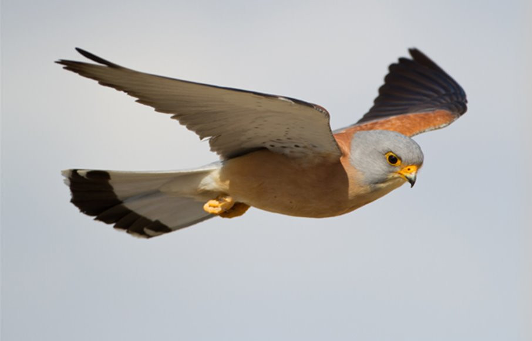

El Cernícalo primilla en la Región de Murcia
Es una rapaz muy similar al cernícalo vulgar (Falco tinnunculus), pero algo más pequeño, entre 27 y 33 cm de longitud. El adulto macho, que se diferencia por la cabeza azulada, presenta el dorso de color pardo rojizo sin manchas negras. La cola gris azulada con banda subterminal negra. La bigotera está muy difusa. La hembra, muy difícil de diferenciar de la del vulgar, presenta las uñas blancas y la bigotera y barreado del dorso más estrecho.
Los cernícalos primilla frecuentan viejos edificios en pueblos y ciudades, gargantas rocosas, acantilados y también terrenos abiertos, despejados y secos, como estepas cerealistas y semidesiertos. Prefiere medios cálidos con vegetación dispersa y abundantes insectos, aunque en los lugares de invernada se desplaza en función de los recursos alimenticios y frecuenta las sabanas y otros medios menos abiertos que los utilizados durante la cría. En España la mayoría de las parejas nidifican en oquedades de viejos edificios, iglesias, etc.
Suele anidar en colonias localizadas en huecos y cavidades de edificios viejos, tejados y acantilados o en los nidos abandonados de otras aves de similar tamaño. Aceptan las cajas nido. La puesta se realiza de abril a junio. Normalmente depositan los huevos en el fondo o suelo del lugar seleccionado. Anidan solitarios y en colonias, varias parejas en un mismo edificio o lugar similar. La nidada consta de tres a seis huevos y la incubación dura de 25 a 28 días. Los pollos abandonan el nido entre las cuatro y seis semanas y continúan siendo alimentados por los padres por unos días. Ambos padres alimentan a los pollos. Se han documentado casos donde algunos padres en las colonias alimentan a sus pollos y a los de otros nidos.